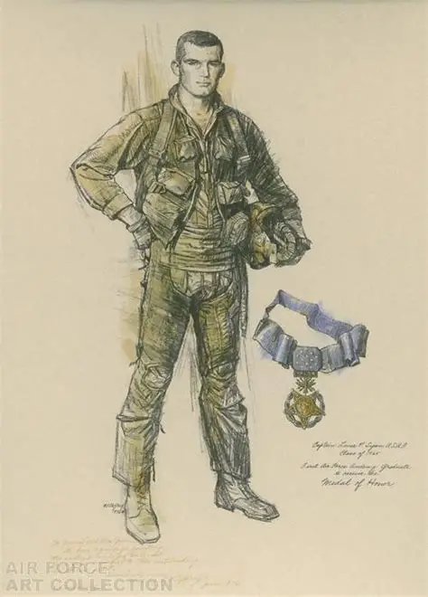
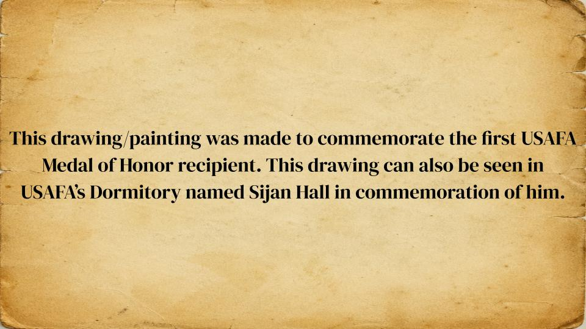
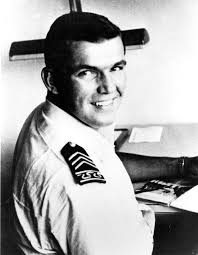
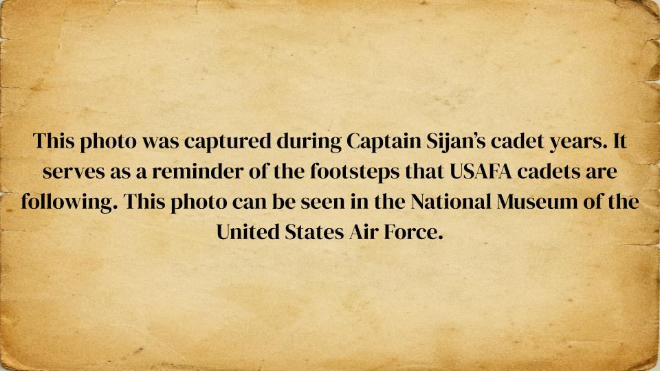

Welcome to Sijan's Virtual Museum
Lance P. Sijan was a U.S. Air Force Captain, 1965 USAFA graduate, and Medal of Honor recipient known for extraordinary resilience during the Vietnam War.
Shot down over Laos in 1967, he evaded capture for weeks despite severe injuries.
After capture, he resisted interrogation, refused cooperation, and attempted escape, enduring brutal conditions.
Even while gravely ill, he upheld military honor and inspired fellow prisoners.
Sijan made the ultimate sacrifice in captivity in 1968.
His courage, sacrifice, and unwavering commitment to duty makes him one of the most revered figures in Air Force history.
Drawing


Picture


Click Here to go back to the Home Page